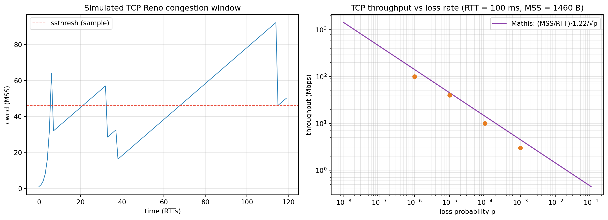

sequenceDiagram
participant C as Client
participant S as Server
Note over C,S: Connection establishment (three-way handshake)
C->>S: SYN, seq=x
S->>C: SYN-ACK, seq=y, ack=x+1
C->>S: ACK, ack=y+1
Note over C,S: Data transfer (full duplex, byte stream)
C->>S: data (seq=x+1)
S->>C: ACK + data
Note over C,S: Connection teardown
C->>S: FIN
S->>C: ACK
S->>C: FIN
C->>S: ACK
Computer Networking: A Top-Down Approach, Part 2 — The Transport Layer
Multiplexing, UDP, the principles of reliable data transfer, pipelining with Go-Back-N and Selective Repeat, TCP connection management and RTT estimation, flow control, and congestion control from Tahoe and Reno through CUBIC and BBR to QUIC — following Kurose & Ross, Chapter 3
Computer Science
Networking
Transport Layer
TCP
UDP
Congestion Control
Protocols
Distributed Systems
A first-principles treatment of the transport layer following Kurose and Ross. It covers multiplexing and demultiplexing, the UDP segment and checksum, and then builds reliable data transfer from scratch: rdt 1.0 through 3.0 with ACKs, sequence numbers, timers, and pipelining; Go-Back-N and Selective Repeat; the full TCP segment structure; connection management with the three-way handshake and teardown; sequence and acknowledgment numbers; adaptive retransmission timers (Jacobson/Karels RTT estimation, Karn’s algorithm) and fast retransmit; sliding-window flow control; the causes and costs of congestion; TCP Tahoe, Reno, slow start, congestion avoidance, fast recovery, and AIMD fairness; the Mathis throughput model; modern congestion control with CUBIC, BBR, and ECN; and QUIC, with an executable Python laboratory that simulates TCP Reno’s congestion window, computes transfer efficiency, and plots throughput against loss.
The network layer delivers datagrams host-to-host. The transport layer delivers them process-to-process — and, in TCP’s case, turns an unreliable, reordering, best-effort channel into a reliable, ordered byte stream.
This is Part 2 of a three-part series following Kurose & Ross, Computer Networking: A Top-Down Approach. Having seen in Part 1 what applications demand, we now descend to the layer that satisfies those demands: Chapter 3, The Transport Layer.
TipThe Series
- Part 1 — Foundations and the Application Layer
- Part 2 — The Transport Layer (this article)
- Part 3 — The Network Layer: Data Plane and Control Plane
1 The Transport Layer’s Job
The network layer provides logical communication between hosts. The transport layer extends that to logical communication between processes, and adds the services applications actually need: reliability, ordering, flow control, and congestion control.
Two protocols dominate:
- UDP — connectionless, unreliable, minimal. It offers little beyond multiplexing, demultiplexing, and an optional checksum: the “null” transport.
- TCP — connection-oriented, reliable, ordered byte stream with flow and congestion control.
The transport layer lives only in end systems; routers in the core act on network-layer datagrams and do not implement transport. This is the key architectural boundary: intelligence at the edge, simplicity in the core.
2 Multiplexing and Demultiplexing
A single host runs many processes; the transport layer must direct incoming segments to the right one. It does so with port numbers.
- Multiplexing (sender): gather data from multiple sockets, add transport headers, pass segments down.
- Demultiplexing (receiver): use header fields to deliver each segment to the correct socket.
A UDP socket is identified by a 2-tuple: (destination IP, destination port). Two datagrams with the same destination port but different source addresses go to the same socket.
A TCP socket is identified by a 4-tuple: (source IP, source port, destination IP, destination port). This is why a server can distinguish multiple simultaneous clients on port 443 — each connection has a distinct 4-tuple.
| Transport | Demux key | Socket model |
|---|---|---|
| UDP | (dest IP, dest port) |
one socket may receive from many sources |
| TCP | (src IP, src port, dest IP, dest port) |
one socket per connection |
3 UDP
UDP is a thin veneer over IP. Its segment has four 2-byte fields — source port, destination port, length, checksum — an 8-byte header, followed by payload.
- Connectionless: no handshake, no connection state.
- No reliability, ordering, or congestion control: datagrams may be lost, duplicated, or reordered.
- Checksum: end-to-end detection of bit errors in the segment (including a pseudo-header with IP addresses), but no correction or retransmission.
Why use UDP at all?
- Fine-grained control: the application decides what to send and when, without TCP’s congestion throttling (important for real-time media that prefers loss to delay).
- No connection setup: no handshake RTT — critical for DNS and for protocols like QUIC that build reliability themselves.
- No connection state: a server can support far more active clients.
- Small header: 8 bytes versus TCP’s minimum 20.
DNS, DHCP, RIP, VoIP, online games, and QUIC all use UDP.
4 Principles of Reliable Data Transfer
Reliability is built from a small toolkit: checksums (detect errors), acknowledgments (ACK) and negative acknowledgments (NAK) (report outcomes), sequence numbers (identify and order), timers (recover from loss), and windows (enable pipelining). We build it up incrementally, as the textbook does.
4.1 rdt 1.0: Perfectly Reliable Channel
Assume no bit errors and no loss. The sender sends, the receiver receives. Trivial.
4.2 rdt 2.0: Channels with Bit Errors
Bits can flip. The receiver returns ACK or NAK. This introduces a fatal flaw: the ACK/NAK itself can be corrupted. The sender cannot know whether to retransmit.
4.3 rdt 2.1: Sequence Numbers to the Rescue
Add a 1-bit sequence number to each packet. The sender alternates 0 and 1; the receiver tracks the expected number and can detect duplicates. A corrupted ACK/NAK is treated as a NAK (retransmit), and duplicate packets are ignored via the sequence number.
4.4 rdt 2.2: NAK-Free
Drop NAKs entirely: the receiver ACKs the last correctly received packet. A duplicate ACK tells the sender the current packet was lost or corrupted — same information, one fewer message type.
4.5 rdt 3.0: Channels with Errors and Loss
Losses are detected with a countdown timer. If no ACK arrives before timeout, retransmit. This is stop-and-wait, and it is correct — but catastrophically slow, because the sender idles while the ACK travels back.
The utilization of stop-and-wait is:
\[ U_{\text{stop-and-wait}} = \frac{L/R}{RTT + L/R} \]
For a 1 Gbps link, 30 ms RTT, and a 1000-byte packet, \(U \approx 0.00027\) — 0.027% utilization. The network sits idle 99.97% of the time. This is the motivation for pipelining.
5 Pipelining: Go-Back-N and Selective Repeat
Pipelining allows multiple in-flight, unacknowledged packets. It requires sequence-number ranges and buffering at the sender (and possibly receiver).
5.1 Go-Back-N (GBN)
- The sender maintains a window of size \(N\) of consecutive unacknowledged packets.
- The receiver is cumulative: it ACKs the highest in-order packet; out-of-order packets are discarded.
- On timeout, the sender retransmits all packets from the lost one onward — hence “go back N.”
Cumulative ACKs can be lost safely: a later ACK implies earlier ones. But a single loss wastes bandwidth by resending correctly received packets.
5.2 Selective Repeat (SR)
- The receiver buffers out-of-order packets and ACKs each one individually.
- The sender retransmits only the lost packet, using per-packet timers.
- Window size must satisfy \(N \le 2^{k-1}\) for a \(k\)-bit sequence number, to avoid ambiguity between new and retransmitted packets.
| Property | Go-Back-N | Selective Repeat |
|---|---|---|
| Receiver buffering | none (discards OOO) | buffers out-of-order |
| ACK style | cumulative | individual |
| Retransmission | from loss onward | only lost packets |
| Timers | one (oldest) | one per outstanding packet |
| Efficiency under loss | lower | higher |
| Complexity | lower | higher |
Pipelining raises utilization to approximately:
\[ U_{\text{pipelined}} = \frac{N \cdot L/R}{RTT + L/R} \]
enabling full-link utilization once \(N \ge RTT \cdot R / L\).
6 TCP
TCP is a connection-oriented, reliable, in-order byte-stream protocol with flow and congestion control.
6.1 The TCP Segment
Key fields:
- Source/destination ports (16 bits each).
- Sequence number — byte-stream number of the first data byte in the segment.
- Acknowledgment number — the next byte the receiver expects (cumulative).
- Header length, flags (
SYN,ACK,FIN,RST,PSH,URG), receive window (rwnd). - Checksum, urgent pointer, and options (MSS, window scaling, SACK, timestamps).
TCP numbers bytes, not packets — the essential difference from the rdt abstractions, and the reason ACKs are cumulative over a byte stream.
6.2 Connection Management: The Three-Way Handshake
The initial sequence numbers are chosen randomly to prevent old duplicate connections from being mistaken for new ones. The MSS (maximum segment size) is negotiated so segments fit the path MTU without IP fragmentation.
6.3 RTT Estimation and Timeouts
The retransmission timeout must adapt to the path. TCP uses an exponentially weighted moving average:
\[ \text{EstimatedRTT} = (1-\alpha)\,\text{EstimatedRTT} + \alpha\,\text{SampleRTT}, \quad \alpha = 1/8 \]
\[ \text{DevRTT} = (1-\beta)\,\text{DevRTT} + \beta\,|\text{SampleRTT} - \text{EstimatedRTT}|, \quad \beta = 1/4 \]
\[ \text{TimeoutInterval} = \text{EstimatedRTT} + 4\cdot\text{DevRTT} \]
This is the Jacobson/Karels algorithm. Karn’s algorithm resolves the retransmission ambiguity: do not use RTT samples from retransmitted segments, and double the timeout on each retransmission (exponential backoff).
6.4 Fast Retransmit
Waiting for a timeout is slow. Triple duplicate ACKs (four ACKs for the same byte) signal a lost segment; the sender retransmits immediately without waiting for the timer. This is the foundation of Reno’s fast recovery.
7 Flow Control
TCP prevents a fast sender from overflowing a slow receiver using a sliding window governed by the receiver-advertised receive window (rwnd): the sender never has more unacknowledged data than rwnd (and the congestion window). The receiver’s buffer size and the application’s read rate determine rwnd; a zero window pauses the sender.
Flow control protects the receiver; congestion control protects the network. They are distinct problems solved by distinct mechanisms.
8 Congestion Control
Congestion occurs when the offered load exceeds network capacity. Its costs are queueing delay, packet loss, and wasted upstream transmission of packets later dropped.
8.1 TCP Tahoe and Reno
The congestion window (cwnd) limits in-flight data. Two classic algorithms:
- Slow start:
cwndbegins at 1 MSS and doubles each RTT untilssthreshor loss. - Congestion avoidance: after
ssthresh,cwndgrows by ~1 MSS per RTT (additive increase).
On loss:
- Tahoe: set
ssthresh = cwnd/2,cwnd = 1, slow start again. - Reno: same on timeout, but on triple duplicate ACKs, fast recovery — set
ssthresh = cwnd/2,cwnd = ssthresh + 3, and continue additive increase without dropping to 1.
8.2 AIMD and Fairness
Reno’s behavior is Additive Increase, Multiplicative Decrease (AIMD): add one MSS per RTT on success, halve on loss. This creates the characteristic sawtooth and drives multiple competing flows toward fairness: flows that gain more share are penalized proportionally, so rates converge near equal.
8.3 The Mathis Throughput Model
For a TCP flow with MSS \(M\), round-trip time \(RTT\), and loss probability \(p\), a well-known approximation is:
\[ \text{BW} \approx \frac{M}{RTT} \cdot \frac{C}{\sqrt{p}}, \quad C \approx 1.22 \]
Throughput falls only as \(1/\sqrt{p}\) — which is why TCP survives on lossy links, and why long fat networks (high RTT) need larger windows.
8.4 The Modern Era: CUBIC, BBR, and ECN
- CUBIC (Linux default): grows
cwndas a cubic function of time since the last loss, making recovery faster on high-bandwidth, high-RTT paths. - BBR (Google): models the bottleneck bandwidth and minimum RTT rather than reacting to loss, improving throughput on lossy paths and reducing bufferbloat.
- ECN (Explicit Congestion Notification): routers mark packets instead of dropping them, letting TCP react before loss.
- QUIC: a UDP-based transport with its own reliability, congestion control, stream multiplexing, and 0-RTT/1-RTT handshakes, avoiding TCP head-of-line blocking and enabling faster connection setup.
9 Laboratory: Reliable Transfer and Congestion Control
9.1 Stop-and-Wait vs Pipelining
First, quantify why pipelining matters by computing link utilization.
Code
import numpy as np
MSS = 1000 * 8 # 1000-byte segments in bits
R = 1e9 # 1 Gbps
RTTs = [1e-3, 10e-3, 30e-3, 100e-3]
print("=== LINK UTILIZATION: STOP-AND-WAIT VS PIPELINED ===")
print(f"{'RTT(ms)':>8} {'stop&wait':>12} {'N=10':>10} {'N=100':>10} {'N=1000':>10} {'req N':>8}")
for rtt in RTTs:
base = MSS / R
u_sw = base / (rtt + base)
row = []
for N in [10, 100, 1000]:
u = min(1.0, (N * base) / (rtt + base))
row.append(u)
reqN = int(np.ceil((rtt + base) / base)) if (rtt + base) > base else 1
print(f"{rtt*1e3:8.1f} {u_sw*100:11.3f}% {row[0]*100:9.1f}% {row[1]*100:9.1f}% {row[2]*100:9.1f}% {reqN:8d}")
print("\n 'req N' = window (in segments) needed to fill the pipe")=== LINK UTILIZATION: STOP-AND-WAIT VS PIPELINED ===
RTT(ms) stop&wait N=10 N=100 N=1000 req N
1.0 0.794% 7.9% 79.4% 100.0% 126
10.0 0.080% 0.8% 8.0% 79.9% 1251
30.0 0.027% 0.3% 2.7% 26.7% 3751
100.0 0.008% 0.1% 0.8% 8.0% 12501
'req N' = window (in segments) needed to fill the pipe9.2 TCP Reno Sawtooth and the Mathis Model
The second experiment simulates Reno’s congestion window over time and compares measured throughput with the \(1/\sqrt{p}\) model.
Code
import numpy as np
import matplotlib.pyplot as plt
rng = np.random.default_rng(7)
# --- Simulate a TCP Reno-like congestion window over time (time in RTTs) ---
MSS = 1460
ssthresh = 64
cwnd = 1.0
cubic_target = None
times, cwnds = [], []
t = 0.0
while t < 120:
times.append(t); cwnds.append(cwnd)
# exponential loss with low probability per RTT
if rng.random() < 0.015:
ssthresh = max(cwnd / 2, 2)
cwnd = max(ssthresh, 1) # Reno fast recovery approximation
elif cwnd < ssthresh:
cwnd *= 2 # slow start
else:
cwnd += 1.0 # additive increase
t += 1.0
times = np.array(times); cwnds = np.array(cwnds)
# --- Throughput vs loss: Mathis model ---
p = np.logspace(-8, -1, 200)
RTT = 0.1
BW = (MSS * 8 / RTT) * 1.22 / np.sqrt(p) # bits/s
fig, axes = plt.subplots(1, 2, figsize=(13, 4.8))
axes[0].plot(times, cwnds, color="#2980b9", lw=1.0)
axes[0].axhline(ssthresh, color="#e74c3c", ls="--", lw=1, label="ssthresh (sample)")
axes[0].set_title("Simulated TCP Reno congestion window")
axes[0].set_xlabel("time (RTTs)"); axes[0].set_ylabel("cwnd (MSS)")
axes[0].legend(); axes[0].grid(alpha=0.3)
axes[1].loglog(p, BW / 1e6, color="#8e44ad", label="Mathis: (MSS/RTT)·1.22/√p")
for loss, bw in [(1e-6, 100), (1e-5, 40), (1e-4, 10), (1e-3, 3)]:
axes[1].scatter([loss], [bw], color="#e67e22", zorder=5)
axes[1].set_title("TCP throughput vs loss rate (RTT = 100 ms, MSS = 1460 B)")
axes[1].set_xlabel("loss probability p"); axes[1].set_ylabel("throughput (Mbps)")
axes[1].legend(); axes[1].grid(alpha=0.3, which="both")
plt.tight_layout(); plt.show()
print("=== CONGESTION WINDOW STATISTICS ===")
print(f" samples={len(cwnds)} min={cwnds.min():.1f} max={cwnds.max():.1f} "
f"mean={cwnds.mean():.1f} MSS")
print(f" mean throughput (MSS/RTT) = {cwnds.mean()*MSS*8/0.1/1e6:.1f} Mbps at RTT=100 ms")
print("\n=== MATHIS MODEL: THROUGHPUT VS LOSS ===")
print(f"{'loss p':>10} {'throughput':>14}")
for pp in [1e-8, 1e-7, 1e-6, 1e-5, 1e-4, 1e-3, 1e-2]:
bw = (MSS * 8 / 0.05) * 1.22 / np.sqrt(pp)
print(f"{pp:10.0e} {bw/1e6:11.1f} Mbps")
=== CONGESTION WINDOW STATISTICS ===
samples=120 min=1.0 max=92.2 mean=48.8 MSS
mean throughput (MSS/RTT) = 5.7 Mbps at RTT=100 ms
=== MATHIS MODEL: THROUGHPUT VS LOSS ===
loss p throughput
1e-08 2849.9 Mbps
1e-07 901.2 Mbps
1e-06 285.0 Mbps
1e-05 90.1 Mbps
1e-04 28.5 Mbps
1e-03 9.0 Mbps
1e-02 2.8 Mbps9.3 Pipelining Efficiency: GBN vs SR
Finally, compare how many retransmissions each pipelining scheme wastes under loss.
Code
print("=== RETRANSMISSION COST UNDER LOSS (window N, one loss at position k) ===")
N = 10
print(f"{'loss at':>8} {'GBN resends':>14} {'SR resends':>12}")
for k in range(1, N + 1):
gbn = N - k + 1 # resend the lost packet and everything after it
sr = 1 # resend only the lost packet
print(f"{k:8d} {gbn:14d} {sr:12d}")
print(f"\n average GBN retransmissions = {(N+1)/2:.1f}, SR = 1.0")
print(" Selective Repeat wins by a factor of about (N+1)/2 on a single loss.")=== RETRANSMISSION COST UNDER LOSS (window N, one loss at position k) ===
loss at GBN resends SR resends
1 10 1
2 9 1
3 8 1
4 7 1
5 6 1
6 5 1
7 4 1
8 3 1
9 2 1
10 1 1
average GBN retransmissions = 5.5, SR = 1.0
Selective Repeat wins by a factor of about (N+1)/2 on a single loss.The laboratory makes the transport layer’s central trade-off concrete: reliability and fairness are engineered, not given. TCP’s AIMD sawtooth is the price of stability and fairness; pipelining is the price of sequence-number complexity; and modern algorithms (CUBIC, BBR, QUIC) are attempts to buy better throughput without paying the old taxes.
10 Summary
\[ \begin{aligned} &\textbf{Transport: } && \text{process-to-process; UDP (best-effort) vs TCP (reliable byte stream).} \\[3pt] &\textbf{Reliability: } && \text{checksums, ACK/NAK, sequence numbers, timers, windows.} \\[3pt] &\textbf{Pipelining: } && \text{GBN (cumulative, discard OOO) vs SR (buffer, selective ACK).} \\[3pt] &\textbf{TCP: } && \text{three-way handshake; byte sequence numbers; Jacobson/Karels timeout; fast retransmit.} \\[3pt] &\textbf{Control: } && \text{flow control (rwnd) protects the receiver; congestion control (cwnd) protects the network.} \\[3pt] &\textbf{AIMD: } && \text{additive increase, multiplicative decrease; sawtooth; fairness.} \\[3pt] &\textbf{Modern: } && \text{CUBIC, BBR, ECN, and QUIC over UDP.} \end{aligned} \]
TCP gives applications a reliable byte stream, but it depends on the network layer to move datagrams from host to host. In Part 3 we descend into the network layer: how routers forward packets in the data plane, and how routing protocols compute the paths in the control plane.
11 Curated References and Further Reading
- Kurose, J. & Ross, K. (2021). Computer Networking: A Top-Down Approach, 8th ed. Pearson. (Primary source: Chapter 3.)
- Postel, J. (1980). Transmission Control Protocol. RFC 793.
- Postel, J. (1980). User Datagram Protocol. RFC 768.
- Jacobson, V. (1988). Congestion Avoidance and Control. ACM SIGCOMM.
- Mathis, M., Semke, J., Mahdavi, J. & Ott, T. (1997). The Macroscopic Behavior of the TCP Congestion Avoidance Algorithm. ACM CCR.
- Jacobson, V., Braden, R. & Borman, D. (1992). TCP Extensions for High Performance. RFC 1323.
- Ha, S., Rhee, I. & Xu, L. (2008). CUBIC: A New TCP-Friendly High-Speed TCP Variant. ACM SIGOPS OSR.
- Cardwell, N., Cheng, Y., Gunn, C., Yeganeh, S. & Jacobson, V. (2016). BBR: Congestion-Based Congestion Control. ACM Queue.
- Iyengar, J. & Thomson, M. (2021). QUIC: A UDP-Based Multiplexed and Secure Transport. RFC 9000.